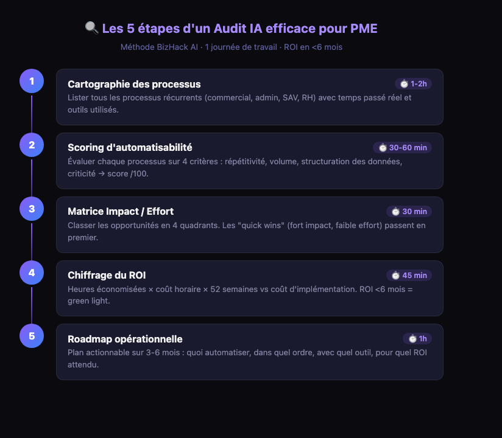

Vous entendez parler d'IA partout. Vos concurrents s'y mettent. Des consultants vous promettent des économies de 40 %. Et vous, vous vous demandez par où commencer — sans vous planter sur un outil mal choisi ou un projet mal calibré.
La réponse est toujours la même : commencez par un audit. Pas une réunion de trois heures à refaire l'organigramme. Un vrai diagnostic opérationnel qui répond à une question simple : dans votre entreprise, quels processus l'IA peut-elle vraiment améliorer — et pour quel gain concret ?
Voici la méthode que j'utilise avec mes clients PME depuis 2 ans, après plus de 50 projets d'automatisation déployés en France.
- Un audit IA, c'est 5 étapes : cartographie → scoring → priorisation → chiffrage → roadmap
- Durée réaliste pour une PME : 1 à 2 journées de travail, pas 6 mois
- Les gains moyens identifiés : 8 à 15h/semaine économisées par collaborateur sur les tâches répétitives
- Sans audit, 70 % des projets IA aboutissent à un outil sous-utilisé ou à un ROI négatif
- Un bon audit se conclut par une roadmap priorisée avec ROI estimé — pas un rapport PowerPoint
Qu'est-ce qu'un audit IA (et ce que ce n'est pas)
Un audit IA n'est pas une étude de marché sur l'intelligence artificielle. Ce n'est pas non plus une conférence sur "les tendances IA 2026" ou un rapport de 80 pages à lire en diagonale.
C'est un diagnostic opérationnel : on entre dans vos processus réels, on identifie les tâches répétitives, chronophages ou sujettes à erreur humaine, et on évalue lesquelles peuvent être automatisées avec un ROI clair et mesurable.
En clair : un audit IA répond à trois questions pratiques.
- Où perdez-vous du temps ? (et combien d'heures par semaine en réalité)
- Quels processus sont automatisables ? (techniquement faisable + économiquement viable)
- Par quoi commencer ? (quick wins vs projets structurants)
Un audit IA n'est pas une vente déguisée de licences logicielles. Si quelqu'un vous propose un "audit" qui se conclut systématiquement par l'achat d'un outil précis, c'est une démonstration commerciale — pas un audit.
Pourquoi faire un audit avant de déployer l'IA ?
Parce que sans diagnostic, vous faites du tourisme technologique. Vous achetez un outil parce qu'un concurrent l'utilise, ou parce qu'un commercial vous a convaincu. Résultat : l'outil est sous-utilisé six mois plus tard, et votre équipe est revenue à ses tableurs Excel.
Voici ce qu'un audit évite concrètement :
L'audit vous permet aussi de prioriser. Dans chaque PME, il y a 5 à 10 processus automatisables. Mais vous ne pouvez pas tout faire en même temps. L'audit classe ces opportunités par impact / facilité d'implémentation, pour que vous commenciez par ce qui rapporte le plus vite.
ChatGPT peut vous suggérer "d'automatiser votre CRM" en 2 minutes. Mais sans connaître votre volume de leads, votre stack technique, vos contraintes RGPD et le niveau de vos équipes — c'est du conseil générique. Un audit, c'est du conseil situé dans votre réalité.
Les 5 étapes d'un audit IA efficace
Voici la méthode que j'applique avec chaque nouveau client. Elle tient en une demi-journée à une journée de travail pour une PME de 5 à 50 personnes.

Cartographie des processus
On liste tous les processus métier récurrents : commercial, admin, production, SAV, RH. Pour chaque processus, on note le responsable, la fréquence, le temps passé par semaine et les outils utilisés. L'objectif : avoir une vue complète de "comment ça fonctionne vraiment" — pas comment ça devrait fonctionner en théorie.
⏱️ 1h à 2h selon la taille de l'entrepriseScoring d'automatisabilité
Chaque processus est évalué sur 4 critères : répétitivité (fait-on la même chose chaque fois ?), volume (combien de fois par semaine ?), structuration des données (les infos sont-elles dans un format cohérent ?) et criticité (quel impact si ça plante ?). On sort un score /100 pour chaque processus.
⏱️ 30 min à 1hMatrice Impact / Effort
On place chaque processus dans une matrice 2×2 : impact potentiel (gain de temps + réduction d'erreurs) en ordonnée, effort d'implémentation (complexité technique + budget) en abscisse. Les "quick wins" sont en haut à gauche — fort impact, faible effort. On commence par eux.
⏱️ 30 minChiffrage du ROI
Pour chaque opportunité priorisée, on estime : heures économisées par semaine × coût horaire moyen × 52 semaines. On compare avec le coût d'implémentation + maintenance. Un projet doit se rentabiliser en moins de 6 mois pour être "quick win". Entre 6 et 18 mois, c'est un projet structurant. Au-delà, on le repousse.
⏱️ 45 minRoadmap opérationnelle
On sort un plan sur 3 à 6 mois : quoi automatiser dans quel ordre, avec quel outil, pour quel budget et quel ROI attendu. Ce n'est pas un rapport Word — c'est un tableau de bord actionnable qu'on commence à exécuter dès la semaine suivante.
⏱️ 1hNotion (cartographie + scoring), une feuille Google Sheets pour la matrice ROI, et n8n pour les prototypes rapides. Pas besoin d'un outil d'audit à 500€/mois — la valeur est dans la méthode, pas dans le logiciel.
Cas client : l'audit qui a transformé Aidenso
Alexis dirige Aidenso, une agence spécialisée dans la gestion d'événements d'entreprise. Quand il m'a contacté, il avait un problème concret : son équipe de 6 personnes passait plus de 20 heures par semaine sur des tâches administratives — relances clients, mise à jour du CRM, envoi de documents contractuels, suivi des fournisseurs.
Il avait déjà essayé deux outils SaaS "tout-en-un" sans succès. Pas parce que les outils étaient mauvais, mais parce qu'il les avait choisis sans diagnostic préalable.
Ce que l'audit a révélé
En une demi-journée de travail ensemble, on a cartographié 14 processus récurrents. Le scoring a fait ressortir 4 quick wins évidents :
- Onboarding client — 3h par nouveau client, 100% répétitif → automatisable à 80%
- Relances devis — envoi manuel de 15 à 20 emails/semaine → automatisable à 100%
- Reporting hebdomadaire — 4h de copier-coller entre outils → automatisable à 90%
- Suivi commandes fournisseurs — mises à jour manuelles dans 3 outils différents → automatisable à 70%
Le résultat après 8 semaines d'implémentation
"On a récupéré l'équivalent d'un mi-temps — sans embaucher. L'audit a été la décision la plus rentable de l'année, et c'était gratuit." — Alexis, fondateur d'Aidenso
Les 4 erreurs classiques à éviter
Après 50+ audits, j'ai vu les mêmes erreurs revenir. Les voici, pour que vous ne les répétiez pas.
Erreur 1 : Automatiser le mauvais processus en premier
Commencer par "automatiser les réseaux sociaux" parce que c'est à la mode, alors que votre vraie perte de temps c'est la facturation manuelle. Le scoring d'impact/effort évite ce piège. Priorisez par douleur réelle, pas par hype.
Erreur 2 : Confondre automatisation et suppression de postes
L'IA ne remplace pas vos collaborateurs — elle les libère des tâches sans valeur ajoutée. Si vous présentez l'audit comme un moyen de "réduire la masse salariale", vous perdrez l'adhésion de votre équipe avant même de commencer. Communiquez sur le gain de temps, pas sur les suppressions.
Erreur 3 : Négliger la qualité des données
Une automatisation ne peut pas fonctionner sur des données désorganisées. Si votre CRM contient 40% de doublons et que vos devis sont dans des PDFs non structurés, l'IA n'y peut rien. Un pré-requis souvent oublié : nettoyer les données avant d'automatiser.
Erreur 4 : Vouloir tout faire en même temps
L'audit identifie 8 opportunités. Vous voulez les lancer toutes simultanément. Résultat : 8 projets à 20% d'avancement, aucun en production. La roadmap sert précisément à éviter ça — on séquence, on finit, on passe au suivant.
Un POC (proof of concept) doit durer 2 à 4 semaines maximum. Si votre projet est encore "en test" au bout de 3 mois, c'est qu'il ne passera jamais en production. Fixez une date de go/no-go dès le départ.
Ce que ça rapporte concrètement
Voici un aperçu des gains typiques identifiés lors des audits que j'ai menés, par type de processus :
| Processus | Temps économisé/sem. | Délai ROI | Difficulté |
|---|---|---|---|
| Relances commerciales automatiques | 3-5h | 2-4 semaines | Facile |
| Reporting client automatisé | 4-8h | 3-6 semaines | Facile |
| Onboarding client | 3-6h | 4-8 semaines | Moyen |
| Prospection LinkedIn | 5-10h | 4-8 semaines | Moyen |
| Facturation et suivi paiements | 2-4h | 6-10 semaines | Moyen |
| Gestion des leads et CRM | 4-7h | 6-12 semaines | Moyen |
| Support client avec chatbot IA | 8-15h | 8-16 semaines | Complexe |
Sur l'ensemble des PME auditées, le gain moyen identifié est de 12 à 20 heures par semaine — soit l'équivalent d'un mi-temps. L'implémentation des quick wins seuls (sans les projets complexes) représente généralement 6 à 10h/semaine récupérées en moins de 2 mois.
Un calcul rapide
Prenons une PME de 8 personnes. Coût moyen d'une heure de travail : 35€ chargé. On identifie 8h/semaine de gains sur les processus répétitifs :
8h × 35€ × 52 semaines = 14 560€/an économisés. Pour un coût d'implémentation de 3 000 à 5 000€ selon la complexité — ROI positif en moins de 4 mois.
Par où commencer ?
Si vous avez lu jusqu'ici, vous avez déjà l'essentiel de la méthode. La vraie question n'est pas "est-ce que mon entreprise a besoin d'un audit IA ?" — si vous avez plus de 3 personnes dans votre équipe et des processus répétitifs, la réponse est oui.
La vraie question, c'est : quand est-ce que vous faites le premier pas ?
Voici comment commencer seul, dès aujourd'hui :
- Listez les 10 tâches les plus répétitives de votre semaine (et celle de votre équipe)
- Pour chacune : estimez le temps passé par semaine et notez si les données sont "propres" et structurées
- Classez-les par temps passé — les trois premières sont vos quick wins candidats
- Cherchez s'il existe un outil ou un workflow n8n pour automatiser chacun
- Ou réservez un audit de 45 min avec moi — je fais ça avec vous, gratuitement
L'audit IA n'est pas une étape optionnelle avant de déployer l'IA — c'est la condition pour que ça marche vraiment. Les PME qui obtiennent des résultats sont celles qui ont pris le temps de comprendre leur réalité avant d'acheter une solution.
Le reste, c'est du bruit.